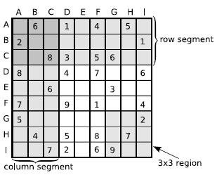

Home Page
F.A.Qs
Statistical Charts
Past Contests
Scheduled Contests
Award Contest
| Online Judge | Problem Set | Authors | Online Contests | User | ||||||
|---|---|---|---|---|---|---|---|---|---|---|
| Web Board Home Page F.A.Qs Statistical Charts | Current Contest Past Contests Scheduled Contests Award Contest | |||||||||
|
Language: Sudoku
Description Oh no! Bill just realized that the sudoku puzzle he had spent the last ten minutes trying to solve essentially was last week's puzzle, only rotated counterclockwise. How cheap! Couldn't the magazine afford to make a new one every week? Of course, he had no way of knowing about this before he started to solve it, as the holes to fill with digits were other than last week. Nevertheless, realizing that this week's puzzle was a simple derivative of last week's certainly took the fun out of solving the rest of it.
The sudoku board consists of 9×9 cells. These can be grouped into 3×3 regions of 3×3 cells each. Some of the cells are filled with a digit 1 through 9 while the rest of them are left empty. The aim of the game is to fill each empty cell with a digit 1 ... 9 so that every row, every column and every region contains each of the numbers 1 ... 9 exactly once. A proper sudoku puzzle always has exactly one solution. Help Bill avoid unpleasant surprises by creating a program that checks whether an unsolved sudoku puzzle is in fact derived from an earlier puzzle by simple operations. The allowed operations are:
Input The input starts with the number of test cases 0 ≤ N ≤ 50 on a single line.
Then for every test case follow nine lines describing last week's puzzle solution, from top to bottom. Each line corresponds to a row in the puzzle and consists of nine digits (1 ... 9), describing the contents of the cell from left to right. Last week's solution is followed by nine lines describing this week's unsolved puzzle. Here, also, every line corresponds to a puzzle row and every digit (0 ... 9) describes the contents of a cell. 0 indicates that the cell is empty. The rows are presented ordered from top to bottom, and within each row, the cells are ordered from left to right. After every test case except the last one follows a blank line. Every unsolved puzzle is guaranteed to be uniquely solvable and last week's solution is always a proper sudoku solution. Output For every test case, output Yes if the sudoku puzzle can be derived from the given solved puzzle using the allowed operations, or No if this is not possible. Sample Input 2 963174258 178325649 254689731 821437596 496852317 735961824 589713462 317246985 642598173 060104050 200000001 008305600 800407006 006000300 700901004 500000002 040508070 007206900 534678912 672195348 198342567 859761423 426853791 713924856 961537284 287419635 345286179 010900605 025060070 870000902 702050043 000204000 490010508 107000056 040080210 208001090 Sample Output Yes No Source |
[Submit] [Go Back] [Status] [Discuss]
All Rights Reserved 2003-2013 Ying Fuchen,Xu Pengcheng,Xie Di
Any problem, Please Contact Administrator